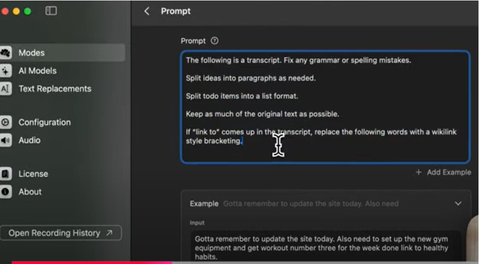

Daily Note-Taking with Obsidian
Introduction
If you are someone who is a student or a busy individual and note-taking consumes the majority of your time, then you need to try out this use case.
Not only can Superwhisper take your words and output notes in your desired format, you can also get it to link up other existing pages without having to lift a finger.
Below is how you can use the note mode for daily note-taking with Obsidian.
Steps

Try it Yourself
Open a page and [give a prompt to create].
In another page add the link to the first page you created using the “Wikilink” keyword.